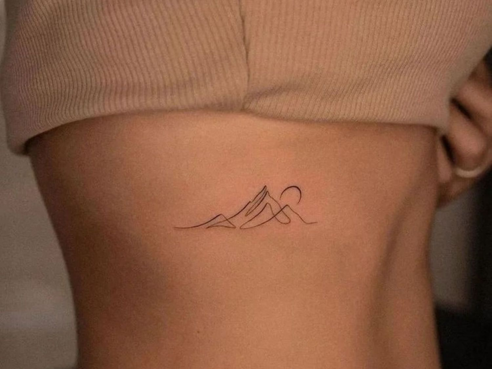
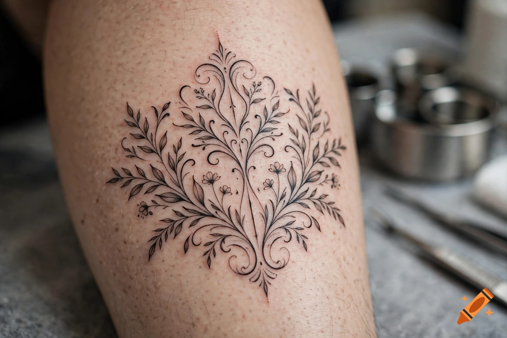

Independent tattoo studio / Los Angeles
Permanent work
for curious bodies.
SOKO is a private studio making thoughtful, custom tattoos in blackwork, fine line, and quiet geometry.
Start a conversation ↗01 / 05Make it yours.
Scroll to explore ↓
CUSTOM WORK ✳ BLACKWORK ✳ FINE LINE ✳ SYMBOLS & STORIES ✳ CUSTOM WORK ✳ BLACKWORK ✳
A considered approach
Tattoos with a point of view.
Not flash. Not rushed. Every piece starts with a conversation and ends with something that feels like it was always meant to be there.
How we work ↗Selected work
Recent pieces
Small marks or full compositions,
built to live well on the body.


Why SOKO
“The best tattoos feel less like decoration and more like a language you already knew.”
— SOKO / Studio notes, vol. 04
What we do
Make a mark
that stays.
Thoughtful design, calm appointments, and a studio that puts your idea first.
01↗
Custom tattoos
One-off pieces developed around your references, story, and body.
02↗
Fine line & micro
Delicate marks with a focus on balance, placement, and longevity.
03↗
Blackwork & cover-ups
Graphic compositions and considered transformations with weight.
04↗
Private appointments
A slower, more personal experience for larger or sensitive pieces.
Come as you are.Silver Lake / LA
Start here
Have a good idea?
Tell us a little about it. We’ll get back to you within 3–5 working days with next steps.
hello@soko.tattooTue—Sat / 10—6